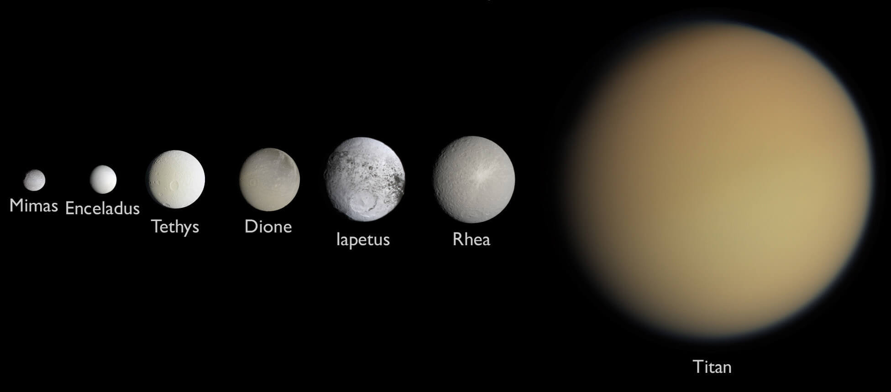

Structure
| Layer | Composition |
|---|---|
| Atmosphere | Molecular hydrogen and helium |
| Mantle | Liquid-metallic hydrogen and helium |
| Core | Dense solid rock |
Atmosphere
Due to it's lower gravity, Saturn's atmosphere has more haze than
Jupiter's, with blurred features and colors muted into a general
yellowish hue. The winds on Saturn are five times as fast as those
measured on Jupiter.
Saturn radiates 2.5 time more heat than it receives from the Sun,
possibly due to the raining-out of helium deep into its interior
creating frictional heat as the helium descends through the lower
density hydrogen.
Moons

Saturn has at least 150 moons and moonlets. The precise figure is uncertain as it is difficult to draw a distinction between a large ring particle and a tiny moon. Some of Saturn's moons act as shepherd moons to confine rings and prevent them from spreading out.
Noticeable point

Saturn's interior is similar to Jupiter's. Contrary to Jupiter, Saturn's density is lower, making it the least dense planet in the Solar System. Combined with it's rapid rotation, Saturn becomes the most oblate planet in our Solar System: Its equatorial and polar diameters vary by almost 10 percent.